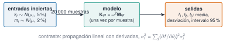

Toda cifra que sale de un modelo hereda la incertidumbre de lo que se le dio: unas rigideces conocidas con un 5 % de error, una masa que no se ha pesado, un amortiguamiento que se supone. La pregunta práctica es: ¿cuánta incertidumbre tiene el resultado? Cuando el modelo es complicado, la respuesta más directa es el método de Monte Carlo: se sortean muchos valores plausibles de las entradas, se calcula la salida con cada uno y se estudia la distribución de los resultados. Esta unidad enseña a manejar distribuciones de probabilidad con Distributions.jl, a hacerlo de forma reproducible (semillas) y a propagar la incertidumbre de las rigideces y masas de un edificio a sus frecuencias propias.
NotaCómo se lee esta unidad
Tiempo orientativo: 90 minutos. Objetivos (4), teoría en cinco píldoras (18), práctica guiada (40), «Pídeselo a Claude» (12), ejercicios (14) y cierre (2). Los resultados dependen de la semilla y de la versión de Julia (véase la píldora 2): lo que se muestra es de Julia 1.12.3, y en otra versión saldrán valores parecidos pero no idénticos; lo reproducible son las conclusiones y los errores relativos.
Objetivos y prerrequisitos
Objetivos. Al terminar esta unidad sabrás:
crear distribuciones con Distributions.jl, evaluar pdf, cdf y quantile, muestrear y ajustar con fit;
fijar y aislar semillas, y explicar qué garantiza (y qué no) una semilla;
comprobar el error de Monte Carlo (\(\propto 1/\sqrt N\)) y el teorema central del límite;
propagar la incertidumbre de los parámetros de un modelo a sus resultados y compararla con la propagación lineal;
decir qué entradas dominan la incertidumbre del resultado.
Prerrequisitos. El curso no los impone en el temario; conviene J1.5 (modelo de 3 GDL), J1.8 y J2.4 (figuras).
Reparto con otras unidades. Aquí se estudia la incertidumbre del modelo. La incertidumbre de las estimaciones a partir de datos (intervalos de confianza, contrastes) está en J2.6, y las derivadas exactas para la propagación lineal (diferenciación automática), en J3.5.
Teoría breve
NotaUn poco de historia: el método de Monte Carlo
El nombre y la idea se asocian al Laboratorio de Los Alamos de los años cuarenta: en 1949, Nicholas Metropolis y Stanislaw Ulam publicaron en el Journal of the American Statistical Association «The Monte Carlo Method», considerado el primer artículo no clasificado sobre el método (Metropolis y Ulam 1949). La idea es tan simple como potente: cuando una cuenta exacta es imposible, se aproxima por una muestra aleatoria, y la precisión mejora con el número de muestras de una forma conocida, sin depender del número de dimensiones del problema. Con ordenadores baratos, es hoy una herramienta cotidiana de ingeniería.
Fuente: Metropolis y Ulam (1949) (Metropolis y Ulam 1949). Datos bibliográficos comprobados en resultados de búsqueda y en un registro bibliográfico, no en el texto del artículo. Consultado el 26-10-2026.
J2.5.1 Distribuciones con Distributions.jl
Una distribución es un objeto que se construye con sus parámetros (la normal, con media y desviación típica, no con la varianza) y responde a las mismas funciones: pdf (densidad), cdf (probabilidad acumulada), quantile (la inversa de la cdf), mean, std y rand (muestreo) (Getting Started (Distributions.jl) 2026):
El intervalo del 95 % de una normal es la media ± 1,96 desviaciones típicas (quantile(Normal(), 0.975) = 1,9600). Otras familias de uso común en el curso:
Distribución
Constructor
Cuándo
Normal
Normal(μ, σ)
errores de medida, sumas de muchos efectos pequeños
Log-normal
LogNormal(μ, σ)
magnitudes positivas con cola larga (rigideces, caudales)
Uniforme
Uniform(a, b)
solo se conocen los límites
Exponencial
Exponential(θ)
tiempos entre sucesos
Truncada
truncated(Normal(μ, σ), a, b)
para imponer límites físicos (no negativos)
Y se ajusta una distribución a datos con fit: la estimación de máxima verosimilitud para la normal es la media y la desviación típica de la muestra.
¿Cuánto vale quantile(Normal(), 0.975), el valor que deja un 2,5 % de probabilidad por encima en una normal estándar?
1,96 (1,95996): es el origen del «± 1,96 σ» del intervalo del 95 %.
J2.5.2 Semillas y reproducibilidad
Un generador de números pseudoaleatorios produce una secuencia determinista a partir de una semilla: con la misma semilla, la misma secuencia. Se fija con Random.seed!(n) (para el generador global) o, mejor, creando un generador local con Xoshiro(n) (el algoritmo por defecto actual) o MersenneTwister(n), que se pasa a rand y evita que unas funciones alteren la secuencia de otras (Random Numbers (stdlib Random) 2026):
Ver el código
a =rand(Xoshiro(1), 3)b =rand(Xoshiro(1), 3)c =rand(Xoshiro(2), 3)(misma_semilla_misma_secuencia = a == b, semillas_distintas = a != c)
Creer que la semilla garantiza el mismo resultado en cualquier versión de Julia. La documentación avisa de que una versión menor puede cambiar la secuencia generada por una semilla (la distribución estadística sí se mantiene) y recomienda guardar los datos generados si hace falta una reproducción exacta (Random Numbers (stdlib Random) 2026). Por eso este curso anota la versión de Julia con cada resultado y compara conclusiones, no cifras de muestras aleatorias. (2) Usar la misma semilla para todo: dos experimentos que deberían ser independientes quedan correlacionados. (3) No fijar ninguna semilla: cada ejecución da otra cosa.
J2.5.3 Monte Carlo y su error
Estimar \(\pi\) lanzando puntos al azar en un cuadrado de lado 1 y contando los que caen dentro del cuarto de círculo es el ejemplo clásico: la fracción de puntos dentro tiende a \(\pi/4\). Lo importante es cómo mejora: el error típico decrece como \(1/\sqrt N\), de modo que para ganar una cifra decimal hay que multiplicar por 100 el número de muestras. Se comprueba repitiendo 20 veces el experimento con cada \(N\) y tomando la mediana del error:
Ver el código
functionpi_mc(rng, N) dentro =0for _ in1:N dentro +=rand(rng)^2+rand(rng)^2<=1endreturn4dentro / NendNs = [10^k for k in1:6]errores = [median([abs(pi_mc(Xoshiro(100s + k), N) -π) for s in1:20]) for (k, N) inenumerate(Ns)]pendiente = ([log10.(Ns) ones(length(Ns))] \log10.(errores))[1](N = Ns, error_mediano =round.(errores, sigdigits=3), error_por_raiz_de_N =round.(errores .*sqrt.(Ns), digits=2), pendiente_en_escala_log =round(pendiente, digits=2))
La pendiente es −0,50: el error es proporcional a \(N^{-1/2}\) (el producto error·√N se mantiene en torno a 1).
J2.5.4 Ley de los grandes números y teorema central del límite
La ley de los grandes números dice que la media de una muestra se acerca a la media real al crecer \(N\). El teorema central del límite añade que, para casi cualquier distribución, la media de \(n\) valores independientes se reparte aproximadamente como una normal con desviación típica \(\sigma/\sqrt n\). Se comprueba con la exponencial (que es asimétrica, con asimetría 2): la media de 30 valores tiene la asimetría casi eliminada.
Figura 1: Izquierda: error de la estimación de π por Monte Carlo en función del número de muestras N (mediana de 20 repeticiones, puntos azules); la línea gris discontinua es la referencia 1/√N. Derecha: histograma de 20 000 medias de 30 valores de una exponencial (asimétrica) y la normal que predice el teorema central del límite (línea naranja).
Para reducir a la mitad el error de una estimación por Monte Carlo basta con duplicar el número de muestras.
Falso. El error decrece como \(1/\sqrt N\): para reducirlo a la mitad hay que cuadruplicar\(N\).
J2.5.5 Propagar la incertidumbre
Sea un modelo \(y=g(\boldsymbol\theta)\) con parámetros \(\boldsymbol\theta\) inciertos. El método de Monte Carlo (Figura 2) sortea \(\boldsymbol\theta^{(1)},\dots,\boldsymbol\theta^{(N)}\) de sus distribuciones, calcula \(y^{(i)}=g(\boldsymbol\theta^{(i)})\) y resume los resultados: media, desviación típica y percentiles. Funciona con cualquier modelo, lineal o no, pero cuesta \(N\) evaluaciones. La alternativa barata es la propagación lineal (de primer orden): \(\sigma_y^2\approx\sum_j(\partial g/\partial\theta_j)^2\sigma_j^2\), válida si el modelo es casi lineal en el rango de incertidumbre y las entradas son independientes. Sirve además para saber qué entrada domina: el término \(j\)-ésimo es su aportación a la varianza.

Figura 2: Propagación de incertidumbre por Monte Carlo. Se sortean las rigideces y masas inciertas, se resuelve el problema de valores propios con cada muestra y se resumen las frecuencias resultantes. La propagación lineal sirve de contraste.
NotaIdea clave
La incertidumbre del resultado no es un número sino una distribución; se resume con la media, la desviación típica y un intervalo (del 95 %), y se sabe cuánto de ella viene de cada entrada. Con una semilla fija y el recuento de muestras, la simulación es reproducible.
Edificio de tres plantas (J1.5): masas nominales de \(2\cdot10^5\) kg y rigideces de \(5\cdot10^7\), \(5\cdot10^7\) y \(4\cdot10^7\) N/m. Supongamos que las rigideces se conocen con una incertidumbre del 5 % y las masas del 2 % (desviaciones típicas relativas, normales e independientes). ¿Qué incertidumbre tienen las tres frecuencias propias?
m_nom =fill(2.0e5, 3)k_nom = [5.0e7, 5.0e7, 4.0e7]functionfrecuencias(m, k) M, K =edificio_cortante(m, k)first(modos_propios(K, M))endf_nom =frecuencias(m_nom, k_nom)round.(f_nom, digits=4)
3-element Vector{Float64}:
1.1048
2.9387
4.3902
Paso 2. Simulación de Monte Carlo. 20 000 muestras, con un generador local de semilla 2026.
Ver el código
N =20_000cv_k, cv_m =0.05, 0.02rng =Xoshiro(2026)F =zeros(N, 3)for i in1:N k = k_nom .* (1.+ cv_k .*randn(rng, 3)) m = m_nom .* (1.+ cv_m .*randn(rng, 3)) F[i, :] =frecuencias(m, k)endresumen =DataFrame(modo=1:3, nominal_Hz=round.(f_nom, digits=4), media_Hz=round.(vec(mean(F, dims=1)), digits=4), desviacion_Hz=round.(vec(std(F, dims=1)), digits=4), cv_pct=round.(100.*vec(std(F, dims=1) ./mean(F, dims=1)), digits=2), p2_5_Hz=round.([quantile(F[:, j], 0.025) for j in1:3], digits=4), p97_5_Hz=round.([quantile(F[:, j], 0.975) for j in1:3], digits=4))resumen
3×7 DataFrame
Row
modo
nominal_Hz
media_Hz
desviacion_Hz
cv_pct
p2_5_Hz
p97_5_Hz
Int64
Float64
Float64
Float64
Float64
Float64
Float64
1
1
1.1048
1.1039
0.0193
1.75
1.0651
1.1412
2
2
2.9387
2.9369
0.0553
1.88
2.8258
3.0428
3
3
4.3902
4.3922
0.0805
1.83
4.2327
4.5494
Una incertidumbre del 5 % en las rigideces da una incertidumbre de en torno al 1,8 % en las frecuencias (la frecuencia varía como la raíz de la rigidez, así que el 5 % se reduce a la mitad, y se reduce más por promediar entre varias rigideces). El intervalo del 95 % del tercer modo es de 4,233 a 4,549 Hz, es decir, ±0,16 Hz. Y la media de las muestras coincide con el valor nominal (a menos de 2,1 milésimas de hercio).
Paso 3. ¿Cuántas muestras hacen falta? Se estudia cómo se estabiliza la desviación típica del primer modo al añadir muestras:
Ver el código
(n = [100, 1000, 10_000, 20_000], desv_primer_modo_Hz = [round(std(F[1:n, 1]), digits=5) for n in (100, 1000, 10_000, 20_000)])
Con 1000 muestras la desviación típica está a un 3 % de su valor final; con 10 000, a menos de un 1 %. Con las desviaciones típicas basta con unas miles de muestras; para percentiles extremos (99,9 %) se necesitan más.
Paso 4. Contraste con la propagación lineal. Las derivadas \(\partial f_i/\partial\theta_j\) se calculan aquí por diferencias centrales (J3.5 mostrará cómo hacerlo exactamente con diferenciación automática).
Las dos coinciden hasta un 1 % o 2 %: el modelo es casi lineal en el rango del ±5 % de incertidumbre. La propagación lineal permite además repartir la varianza entre las seis entradas:
(Porcentaje de la varianza de cada frecuencia que aporta cada parámetro.) El primer modo depende sobre todo de la rigidez del primer entrepiso (57 %) y del segundo (24 %); el segundo, de la del tercero (70 %); el tercero, de la del segundo (72 %). Las masas aportan entre el 10 % y el 15 % de la varianza (suma de las tres: 14,8 %, 10,5 % y 13,4 % en los tres modos): menos que las rigideces, pero no es despreciable. Es información valiosa para decidir dónde medir mejor.
Figura 3: Distribución de las tres frecuencias propias con rigideces del 5 % y masas del 2 % de incertidumbre (20 000 muestras). La línea discontinua marca el valor nominal y las bandas sombreadas, el intervalo del 95 %. La incertidumbre relativa es parecida en los tres modos (1,8 %), pero la absoluta crece con la frecuencia.
Paso 5. ¿Es normal el resultado? Un modelo casi lineal con entradas normales da salidas casi normales. Se comprueba con la asimetría y se ajusta una normal:
Asimetrías muy pequeñas y curtosis casi nula: la normal describe bien el resultado, y entonces «media ± 1,96 desviaciones» es una buena forma de dar el intervalo del 95 %.
Paso 6. Para qué sirve. En J1.7 y J2.4, un daño del 10 % en el entrepiso 2 bajaba la tercera frecuencia unos 0,14 Hz (de 4,390 a 4,254 Hz). Con las incertidumbres de este modelo, la frecuencia del tercer modo del edificio sano tiene un intervalo del 95 % de ±0,16 Hz: mayor que el efecto del daño. Por eso no se puede detectar el daño comparando una frecuencia medida con la de un modelo con parámetros inciertos; se compara el edificio consigo mismo en dos momentos (de ahí los contrastes de J2.6 y el seguimiento de M7).
La versión probada con pytest está en python/montecarlo.py (frecuencias, propagacion, sigma_lineal). Los generadores de NumPy y Julia son distintos, así que no se comparan muestras sino estadísticos: la prueba comprueba que la desviación de la simulación de Python coincide con la propagación lineal dentro del 5 %, y que esta coincide con la de Julia.
scipy.stats ofrece las distribuciones (norm, lognorm, uniform, expon) con pdf, cdf, ppf (el cuantil), rvs (muestreo) y fit. La semilla se pasa a numpy.random.default_rng(semilla), el equivalente del generador local de Julia.
NotaQué se ha conseguido
Una distribución de las tres frecuencias propias a partir de incertidumbres de rigideces y masas, contrastada con la propagación lineal, con un reparto de la varianza por parámetro y una conclusión práctica: la incertidumbre del modelo es comparable al efecto de un daño del 10 %, así que hay que comparar el edificio consigo mismo. Con una semilla anotada y un número de muestras justificado.
«Pídeselo a Claude»
TipPrompt
«Con Julia, --project=., Distributions.jl y Resonancia.jl: para el edificio de tres plantas (masas de 2·10⁵ kg y rigideces de 5·10⁷, 5·10⁷ y 4·10⁷ N/m; modelo con edificio_cortante y modos_propios), sortea 20 000 muestras de las rigideces con incertidumbre normal del 5 % y de las masas del 2 % (independientes), con un generador local Xoshiro(2026). Calcula con cada muestra las tres frecuencias propias y dame la media, la desviación típica y el intervalo del 95 % de cada una. Contrasta la desviación típica con la propagación lineal (derivadas por diferencias centrales) y dime qué parámetro aporta más varianza a cada frecuencia. No inventes cifras: si algo no sale, dilo. Indica la versión de Julia y la semilla.»
Verifica. (a) Que las desviaciones típicas son del orden de 0,019, 0,055 y 0,080 Hz (1,8 % de coeficiente de variación) y que la media coincide con el valor nominal (1,105, 2,939 y 4,390 Hz). (b) Que la propagación lineal da valores a menos de un 2 % de los de Monte Carlo. (c) Que el primer modo depende sobre todo de \(k_1\), el segundo de \(k_3\) y el tercero de \(k_2\). (d) Que usa un generador local con semilla y anota la versión de Julia. (e) Que no concluye «hay daño» de una diferencia menor que el intervalo del 95 %.
Ejercicios
¿Qué coeficiente de variación (desviación típica entre media, en %) tiene la tercera frecuencia propia con rigideces del 5 % y masas del 2 % de incertidumbre?
Un 1,83 % (0,0805 Hz sobre 4,392 Hz). Las otras dos, 1,75 % y 1,88 %.
Quieres que el error de una estimación por Monte Carlo sea la mitad. ¿Por cuántas veces hay que multiplicar el número de muestras?
Por 4, porque el error decrece como \(1/\sqrt N\) (\(\sqrt4=2\)).
Con la misma semilla, el programa da exactamente la misma muestra aleatoria en cualquier versión de Julia.
Falso. Garantiza la repetición en la misma versión; una versión menor puede cambiar la secuencia asociada a una semilla. Por eso se anota la versión y se guardan los datos generados si hace falta una reproducción exacta.
La rigidez del segundo entrepiso aporta el 72 % de la varianza de la tercera frecuencia. Si pudieras medirla con mucha más precisión, ¿qué ganarías y qué no?
Dice que la incertidumbre de la tercera frecuencia bajaría mucho (la mayor parte de su varianza desaparecería).
Añade que las incertidumbres de los otros modos apenas cambiarían (dependen sobre todo de otras rigideces).
La doy por superada si…
Creo distribuciones, evalúo pdf, cdf y quantile, muestreo y ajusto con fit.
Fijo semillas con generadores locales y sé qué garantizan (y qué no).
Compruebo que el error de Monte Carlo decrece como \(1/\sqrt N\).
Propago incertidumbre por Monte Carlo y la contrasto con la propagación lineal.
Reparto la varianza entre las entradas y saco una conclusión práctica.
Cierre. Escribe tres líneas: qué he entendido, qué todavía no domino y cuál es mi siguiente paso pequeño. Si Claude ejecuta una simulación, pídele siempre la semilla, la versión de Julia y el número de muestras.